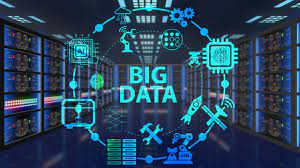

Suite à l'évolution constante des nouvelles technologies surtout orientées vers L'intélligence Artificiel (IA), Le BIG DATA et la DATA SCIENCE
nous établissons de nouveaux programmes de projets orientées vers ces domaines concernés
L’objectif ? Annotons d'abord que les nouvelles technologies envahissent déjà le marcher industriel.
C'est l'exemple des véhicules électriques Testla avec une conduite automatisée
qui rivalise avec ses concurants, l'arrivée de la Data Science en trading,
pour ne citer que quelqueux uns.
Pour éviter un retard en terme de nouvelles technologies nous sommes obligés de garder
un oeil sur le marcher afin d'élaborer de nouveaux projets en la matière.
Ces projets simple mais éfficaces nécéssitent beaucoup de ressources et d'investissements
en matière d'argent, du temps, et de l'énergie.
Intelligence artificielle (IA)

|
|
|
Intelligence artificielle (IA) |
|
Comment l’intelligence artificielle change nos vies ? |
|
|
L’IA facilite les tâches quotidiennes. |
Le Big Data
|
Le Big Data, ajouté à de l’intelligence artificielle peut devenir votre nouvel allié pour la gestion des relations humaines au sein de l’entreprise. En effet, son exploitation permet d’ajuster des capacités à des parcours professionnels pour chaque collaborateur, augmentant les performances de ses derniers. Par exemple, lors d’une phase de recrutement, ce flux de données croisé aux bons filtres : (réseaux sociaux, poste, zone géographique, compétences, politique d’entreprise) permettrai d’identifier le candidat le plus fiable pour un poste. En plus de la gestion humaine, pour les industries, la Big Data peut permettre d’augmenter la rentabilité de votre production. Grâce à son analyse, elle peut permettre la mise en place de processus de fabrications efficace, tournée vers la prédiction de la demande. Résultat : une organisation optimale tout en réduisant le risques de potentielles pertes dues aux fluctuations du marché. C'est la conséquence logique du poids que le numérique a pris dans notre vie : les données se multiplient à un rythme effréné. Produites par nos ordinateurs, nos téléphones mobiles, nos outils de paiement, mais aussi par les multiples capteurs qui équipent désormais nos voitures, nos routes ou nos maisons, ces données sont transmises à des milliers de « data centers », qui les stockent, les analysent et les recoupent. « Chaque minute, environ 300.000 tweets, 15 millions de SMS, 200 millions d'e-mails sont envoyés dans le monde, tandis que des dizaines d'heures de vidéo sont mises en ligne sur YouTube et que 250 gigaoctets d'information sont archivés sur les serveurs de Facebook », écrit Gilles Babinet en introduction de son dernier essai. |
|
|  |
Qu'est-ce que la Data Science ?

|
|
|
Avant d’aborder plus en détail son rôle dans la finance, une piqûre de rappel s’impose sur ce qu’est la Data Science. Il s’agit d’une discipline regroupant des méthodes, des processus scientifiques, des systèmes et des algorithmes pour extraire des connaissances à partir des données structurées ou non structurées. Le trading algorithmique Le Big Data et la Data Science ont eu un impact majeur sur le trading algorithmique. Les flux de données sont analysés afin de prendre de meilleures décisions. Ceci permet de mieux choisir dans quelles actions investir, quand les acheter et quand les vendre. Il s’agit d’un précieux atout pour le monde de la finance. |
|
Que fait un Data Scientist financier ? Un Data Scientist financier peut avoir une large diversité de missions. Au quotidien, il peut s’occuper de la gestion de risques, de la détection de fraude, de la personnalisation de l’expérience client, de l’analyse client, du trading algorithmique ou de l’automatisation tarifaire. De manière générale, le rôle du Data Scientist est de développer des processus pour collecter, stocker et analyser les données pour en tirer des informations. À partir de ces informations, il propose des solutions stratégiques aux problèmes de l’entreprise. |
|